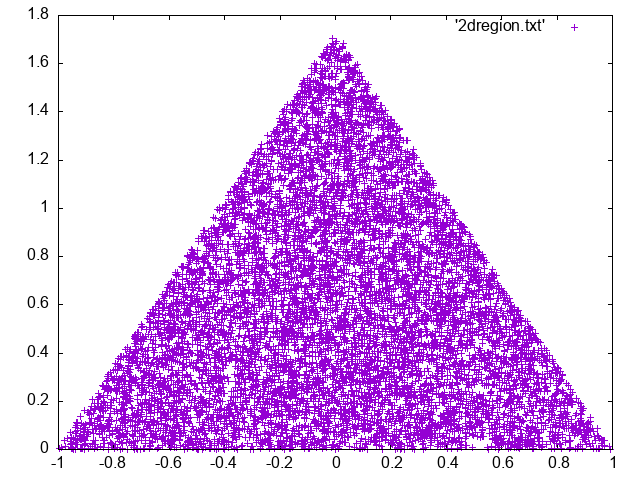

Random Numbers#
REFS:
Boudreau, Applied Computational Physics
Heath, Scientific Computing
Landau y Paez, Computational physics, problem solving with computers
Anagnostoupulos, A practical introduction to computational physics and scientific computing
Ward, Numerical Mathematicas and Computing
Go to https://tinyurl.com/ProgCPP-presentations for a presentation regarding the topic.
Generating random numbers is a very old computer science problem with many useful applications. Here we will study how to use the rng (random number generators) in c++, and then use to sample regions, compute integral, and perform simulations.
A random number routine is a mathematical rule allows to generate random numbers from a starting point (seed) , numbers which hopefully are
not correlated
have a long period
are produced efficiently
Having a general rng for any purpose is not easy task. There are test, like https://en.wikipedia.org/wiki/TestU01?useskin=vector, that check for some desirable rng properties. Still some rng are better than others (see https://www.pcg-random.org/), and some that might work well for something like MC simulations, might not be ideal for cryptographic applications. In the following, we are going to check the quality of a simple linear congruential random number generator and, then, we are going to check for the C++ specific routines.
Linear congruential Random Number Generator#
Represented by
where \(a, c, m\) are integers constants. The random generator quality depends on those constants. There are several proposal for them, check https://en.wikipedia.org/wiki/Linear_congruential_generator .
To test the procedure, we will use three diferent pairs of constant and apply the following algorithm to all of them:
Generate N = 10000 points of the form \((x_i, x_{i+1}, x_{i+2})\), where \(x_{i+1} = (a x_i + c) \mod m\). In toal you will need to call the LCRNG \(3N\) times.
Normalize by dividing by \(m-1\) so the points are normalized to \([0, 1)\).
Plot it. For gnuplot you can use the command:
splot 'data.txt' w points ps 0.1 pt 2
Use the following constants:
\(a = 1277, c = 0, m = 2^{17}\)
\(a = 1664525, c = 1013904223, m=4294967296\)
\(a=37, c=0, m=128\)
// Implements a simple linear congruential generator (LCG)
// to generate random numbers.
#include <string>
#include <fstream>
#include <iostream>
struct LCG {
unsigned long long x;
unsigned long long a;
unsigned long long c;
unsigned long long m;
};
int main(int argc, char **argv) {
if (argc != 7) {
std::cerr << "Usage: " << argv[0] << " <seed> <a> <c> <m> <NSAMPLES> <OUT_FNAME>" << std::endl;
return 1;
}
LCG lcg;
lcg.x = 2*std::stoull(argv[1]); // the seed acts as initial value
lcg.a = std::stoull(argv[2]);
lcg.c = std::stoull(argv[3]);
lcg.m = std::stoull(argv[4]);
const int NSAMPLES = std::stoull(argv[5]);
const std::string fname = std::string(argv[6]);
const int NCOLS = 3;
std::ofstream fout(fname);
// TODO
fout.close();
return 0;
}
For the first and second cases you should get something like
Randon number generators from C++#
Since C++ 11, there are several waves to generate random numbers and there is standard header, to do so, and which is much more general and powerful than the simple rand function. As described in https://en.cppreference.com/w/cpp/numeric/random, generally you will need three tools: a random device, or a seed, to initialize the random sequence; a random engine, to generate random bits, and a random generator which uses the random engine to produce random numbers with a given distribution.
The following shows overview of the random number distributions that you can use from the C++ standard library:

You can also handle integer or discrete distributions,

A more detailed illustration can be found at https://hackingcpp.com/cpp/std/random.html
If we want, for instance, to generate random numbers uniformly distributed on the interval [a, b) (notice the open value at the right), we can use the uniform_real_distribution generator as
#include <iostream>
#include <fstream>
#include <random>
#include <string>
#include <map>
using param_t = std::map<std::string, double> ;
void check_args(int argc, char **argv);
void generate_samples(int seed, int nsamples, param_t &p);
int main(int argc, char **argv)
{
check_args(argc, argv);
param_t params; // Store the read params here
const int SEED = std::stoi(argv[1]);;
const int SAMPLES = std::stoi(argv[2]);
params["A"] = std::stod(argv[3]);;
params["B"] = std::stod(argv[4]);
generate_samples(SEED, SAMPLES, params);
return 0;
}
void check_args(int argc, char **argv)
{
if (5 != argc) {
std::cerr << "Error. Usage: \n" << argv[0] << " SEED SAMPLES A B\n";
exit(1);
}
}
void generate_samples(int seed, int nsamples, param_t &p)
{
// TODO
}
But how to be sure that these numbers are actually following the distribution you want? let’s make a histogram!
Plot the random samples in gnuplot.
Computing the histogram#
A histogram is basically counter that counts how many samples fall into a bin or box. A histogram needs a minimum or a maximum limit and also a number of bins. Then you can just count how many samples for into a single bin I’m from that you can estimate for instance, the probability density function or the cummulative probability, or whatever you need.
The following program shows how to compute the histogram from samples read from a file (create first a file with the random samples), and then print a pdf from the histogram (you have to complete some parts). If I have a count histogram, \(c_i\), the probability can be estimated as \(p_i = c_i/\sum_i c_i\). And the the probability density function as \(\text{pdf}_i = p_i/\Delta x\), where \(\Delta x\) is the bin width.
#include <iostream>
#include <fstream>
#include <random>
#include <string>
#include <vector>
#include <map>
// to store params of different type, ;)
struct param_t
{
std::string IFNAME;
double XMIN;
double XMAX;
int NBINS;
std::string OFNAME;
};
// forward declarations
void check_args(int argc, char **argv, param_t ¶ms);
void compute_histogram(const param_t ¶ms);
// main function
int main(int argc, char **argv)
{
param_t p;
check_args(argc, argv, p);
compute_histogram(p);
return 0;
}
// function definitions
void check_args(int argc, char **argv, param_t & p)
{
if (6 != argc) {
std::cerr << "Error. Usage:\n" << argv[0] << " SAMPLES_FNAME XMIN XMAX NBINS HISTO_FNAME\n";
exit(1);
}
p.IFNAME = std::string(argv[1]);
p.XMIN = std::stod(argv[2]);
p.XMAX = std::stod(argv[3]);
p.NBINS = std::atoi(argv[4]);
p.OFNAME = std::string(argv[5]);
}
void compute_histogram(const param_t & p)
{
double DX = (p.XMAX - p.XMIN)/p.NBINS;
std::ifstream fin(p.IFNAME);
double x;
int nsamples = 0;
std::vector<double> histo(p.NBINS, 0.0);
while (fin >> x) {
nsamples++;
int bin = int((x - p.XMIN)/DX); // compute the bin where the sample lies
if (0 <= bin && bin < p.NBINS) { // check if the bin is included
histo[bin]++; // increase the counter in that bin
}
}
fin.close();
// TODO: write the pdf to the output file
}
Generating numbers with a given distribution#
If your distribution is not on those already implemented, you will a method to generate variates, like the Rejection method, Ratio of uniforms, the inverse transform method, or many others. If you have the analytical distribution, you can apply the inverse transform method, based in the probability conservation, to generate the target distribution from a uniform distribution in [0, 1) .
Inverse transform method#
In this case we are able to estimate, theoretically, the inverse cummulative distribution of the target distribution, and from it we can generate samples. Check inverse transform method
Inverse method illustration |
Animation |
|---|---|
|
|


{kind=link}
{kind=link}
Example: Exponential distribution#
In this case you want to invert the cumulative probability function. Let’s say that you have an exponential distribution, whose density is
whose cumulative distribution is
Now, the cumulative distribution is in the range \([0, 1)\). If we equate it to a uniform random number in the same interval, \(z = F(x)\), then we can invert this expression and obtain \(x = F^{-1}(z)\). For the exponential distribution we get
Generate N random samples, following the exponential distribution, but using the inverse transform method. Show the histogram.
#include <iostream>
#include <fstream>
#include <random>
#include <string>
double f(double x);
void exponential_inverse_method(int seed, int samples, std::string & fname, double mylambda);
int main(int argc, char **argv)
{
if (argc != 5) {
std::cerr << "Usage: " << argv[0] << " <seed> <samples> <fname> <lambda>\n";
return 1;
}
const int SEED = std::stoi(argv[1]);;
const int SAMPLES = std::stoi(argv[2]);
std::string fname = argv[3];
const double mylambda = std::stod(argv[4]);
exponential_inverse_method(SEED, SAMPLES, fname, mylambda);
return 0;
}
void exponential_inverse_method(int seed, int samples, std::string & fname, double mylambda)
{
std::cout << "Generating exponential random numbers using inverse method\n";
// TODO
std::mt19937 gen(seed);
std::ofstream fout(fname);
fout.close();
std::cout << "Done. Check the file " << fname << std::endl;
}
Rejection method#
In the Rejection method one uses another auxiliary distribution to compute samples with the target distribution. The general algorutm is as follows (from Wikipedia)
Sample a point on the x‑axis from the proposal distribution.
Draw a vertical line at this x {\displaystyle x}‑position, up to the maximum y-value of the probability density function of the proposal distribution.
Sample uniformly along this line from 0 to the maximum of the probability density function. If the sampled value is greater than the value of the desired distribution at this vertical line, reject the x ‑value and return to step 1; else the x‑value is a sample from the desired distribution.
You can cehck more at https://bookdown.org/rdpeng/advstatcomp/rejection-sampling.html
For instance, if we want to generate samples with the pdf
Since this is always than 3.0/4.0, we can use , as auxiliary,
So, we generate a random sample \(x\) in \([-1, 1)\) (where \(f\) is defined), then generate a uniform \(r\), and accept only if \(r < f(x) \).
#include <iostream>
#include <fstream>
#include <random>
#include <string>
#include <vector>
double f(double x) {
return 3.0*(1-x*x)/4.0;
}
void rejection(int seed, int nsamples, std::string & fname);
int main(int argc, char **argv)
{
if (argc != 4) {
std::cerr << "Usage: " << argv[0] << " <seed> <samples> <filename>\n";
return 1;
}
const int SEED = std::stoi(argv[1]);;
const int SAMPLES = std::stoi(argv[2]);
std::string FNAME = argv[3];
rejection(SEED, SAMPLES, FNAME);
return 0;
}
void rejection(int seed, int nsamples, std::string & fname)
{
// TODO
}
Sampling regions#
Let’s assume that you want to generate random samples uniformly distributed inside the ellipse \(x^2 + 4y^2 = 4\). To do so, you can just use rejection sampling as before, using as limits the limits of the rectangle circumscribing the ellipse, or even optimize, by not generating samples across the whole rectangle but inside the region (for a given \(x\), generate \(y\) in \([-\sqrt{1-x^2/4}, +\sqrt{1-x^2/4})\). Are the results the same?
Generate random numbers \(-2 \le x \le 2\), and \(-1 \le y \le 1\), reject those outside the region.
As another approach, do the same but, to avoid wasting number, generate \(|y| \le \frac{1}{2}\sqrt{4-x^2}\) so you always accept it.
Do you notice any difference?
#include <iostream>
#include <fstream>
#include <cmath>
#include <random>
#include <string>
#include <vector>
double f(double x);
void generate_in_region(int seed, int nsamples, std::string & fname);
bool in_region(double x, double y);
int main(int argc, char **argv) {
if (argc != 4) {
std::cerr << "Usage: " << argv[0] << " <seed> <samples> <output file>" << std::endl;
return 1;
}
const int SEED = std::stoi(argv[1]);;
const int SAMPLES = std::stoi(argv[2]);
std::string fname = argv[3];
generate_in_region(SEED, SAMPLES, fname);
return 0;
}
bool in_region(double x, double y) {
// TODO
}
void generate_in_region(int seed, int nsamples, std::string & fname)
{
// TODO
}
This is a simple example of what you can get with both approaches
{kind=link}
{kind=link}
Now generate random number uniformly distributed inside a triange.
#include <iostream>
#include <fstream>
#include <cmath>
#include <random>
#include <string>
#include <vector>
bool in_region(double x, double y);
void generate_in_region(int seed, int nsamples, std::string & fname);
int main(int argc, char **argv) {
if (argc != 4) {
std::cerr << "Usage: " << argv[0] << " <seed> <samples> <output file>" << std::endl;
return 1;
}
const int SEED = std::stoi(argv[1]);;
const int SAMPLES = std::stoi(argv[2]);
std::string fname = argv[3];
generate_in_region(SEED, SAMPLES, fname);
return 0;
}
bool in_region(double x, double y) {
// TODO
const double SQRT3 = std::sqrt(3);
}
void generate_in_region(int seed, int nsamples, std::string & fname)
{
// TODO
const double SQRT3 = std::sqrt(3);
}
You should get something like
{kind=link}
[ ] Can you estimate the area from the previous computation (method 1)
[ ] Generate a random sample in the triangular region delimited by the x and y axis and the straight line \(y = 1-x\).
[ ] Generate a random uniform sample in the diamond figure with vertexes at \((1, 0), (0, 1), (-1, 0), (0, -1)\).
[ ] Generate a random uniform sample in a sphere, \(x^2 + y^2 + z^2 = R^2\). Count the fraction of numbers that are in the first octant.
Computing multi-dimensional integrals#
Computing integrals using random numbers is easy and practical, specially for large dimensions. In the unit interval, one can compute
so the integral is approximated as the average function value. For a general interval, one has
or , in higher dimensions
In general one has
Example: 2D Integral#
Compute the following integral
where the integration region \(\Omega\) is the disk defined as \((x-1/2)^2 + (y-1/2)^2 \le 1/4\). Exact value is close to 0.57 .
#include <iostream>
#include <fstream>
#include <cmath>
#include <random>
#include <string>
#include <vector>
double f(double x, double y); // function to integrate
bool in_region(double x, double y); // check if point is in region
double integral(int seed, int nsamples, std::string fname);
int main(int argc, char **argv)
{
if (argc != 4) {
std::cerr << "Usage: " << argv[0] << " <seed> <samples> <output file>\n";
return 1;
}
const int SEED = std::atoi(argv[1]);;
const int SAMPLES = std::atoi(argv[2]);
std::string fname = argv[3];
integral(SEED, SAMPLES, fname);
return 0;
}
double f(double x, double y) {
return std::sin(std::sqrt(std::log(x+y+1)));
}
bool in_region(double x, double y) {
// TODO
}
double integral(int seed, int nsamples, std::string fname) {
// TODO
}
Example: Volume#
Now compute the volume of the following region
\begin{cases} &0 \le x\le 1,\ 0 \le y\le 1, \ 0 \le z\le 1, \ &x^2 + \sin y\le z, \ &x -z + e^y \le 1. \end{cases} The expected value is around 0.14
Exercises#
[ ] (Ward) Compute
(72)#\[\begin{equation} \int_0^2\int_3^6\int_{-1}^1 (y x^2 + z\log y + e^x) dx dy dz \end{equation}\][ ] Compute the area under the curve \(y = e^{-(x+1)^2}\)
(Boudreau, 7.8.7) Estimate the volume of an hypersphere in 10 dimensions. The convergence rate is equal to \(C/\sqrt M\), where \(M\) is the total number of samples. Estimate the value of \(C\). Is it the same for 20 dimensions?